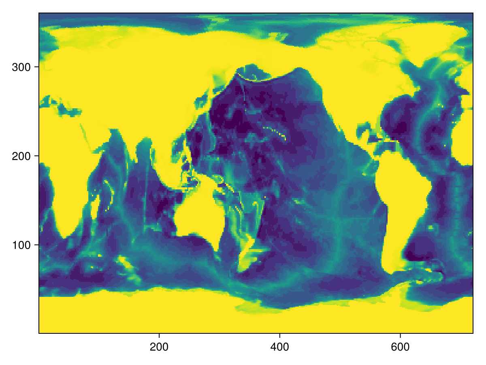
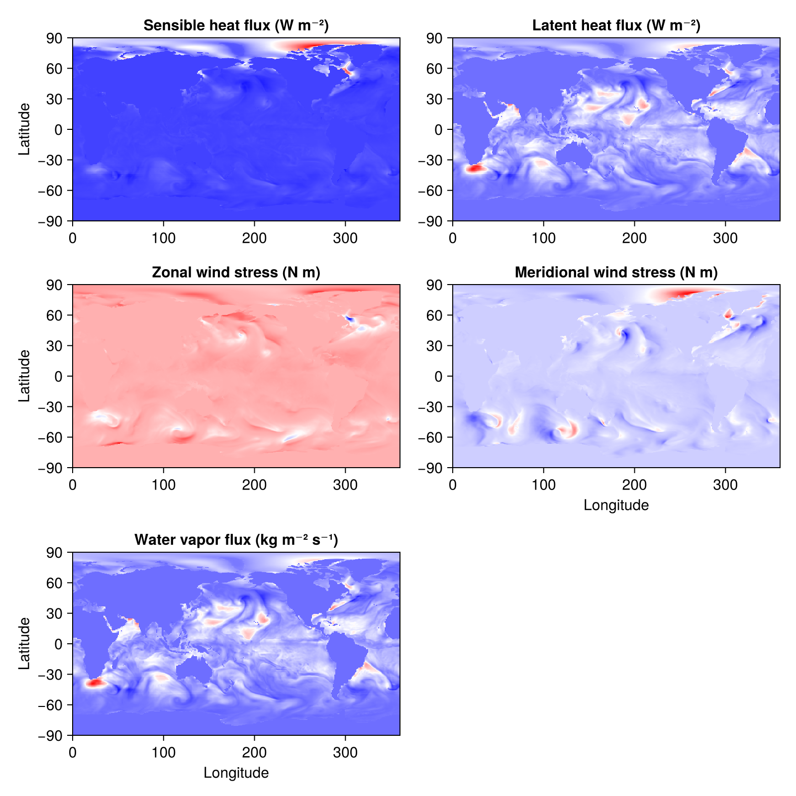

Surface fluxes from prescribed ocean and atmosphere
ClimaOcean uses bulk formulae to estimate the surface exchange of momentum, heat, and water vapor between the atmosphere and the ocean.
This example demonstrates an example of the turbulent surface flux calculations performed in ClimaOcean using ECCO2 data for the ocean and JRA55 data for the atmosphere.
For this example, we need ClimaOcean with its DataWrangling modules: ECCO2 and JRA55. We also need Oceananigans for the ImmersedBoundaryGrid and Field utilities, and CairoMakie to plot.
using ClimaOcean
using ClimaOcean.ECCO
using ClimaOcean.JRA55
using ClimaOcean.OceanSimulations
using Oceananigans
using CairoMakieComputing fluxes on the ECCO2 grid
We start by building the ECCO2 grid, using ECCO_bottom_height to identify the bottom height.
grid = ECCO_immersed_grid()
fig = Figure()
ax = Axis(fig[1, 1])
heatmap!(ax, interior(grid.immersed_boundary.bottom_height, :, :, 1))CairoMakie.Screen{IMAGE}

Next, we construct our atmosphere and ocean.
The atmosphere is prescribed, downloaded from the JRA55 dataset. It contains:
- zonal wind
u - meridional wind
v - surface temperature
T - surface relative humidity
q - surface pressure
p - downwelling shortwave radiation
- downwelling longwave radiation
We invoke the constructor with only the first two time indices, corresponding to January 1st (at 00:00 AM and 03:00 AM).
atmosphere = JRA55PrescribedAtmosphere(1:2; backend = InMemory())
ocean = ocean_simulation(grid)Simulation of HydrostaticFreeSurfaceModel{CPU, ImmersedBoundaryGrid}(time = 0 seconds, iteration = 0)
├── Next time step: 5 minutes
├── Elapsed wall time: 0 seconds
├── Wall time per iteration: NaN days
├── Stop time: Inf days
├── Stop iteration: Inf
├── Wall time limit: Inf
├── Callbacks: OrderedDict with 4 entries:
│ ├── stop_time_exceeded => Callback of stop_time_exceeded on IterationInterval(1)
│ ├── stop_iteration_exceeded => Callback of stop_iteration_exceeded on IterationInterval(1)
│ ├── wall_time_limit_exceeded => Callback of wall_time_limit_exceeded on IterationInterval(1)
│ └── nan_checker => Callback of NaNChecker for u on IterationInterval(100)
├── Output writers: OrderedDict with no entries
└── Diagnostics: OrderedDict with no entriesNow that we have an atmosphere and ocean, we set! the ocean temperature and salinity to the ECCO2 data by first creating T, S metadata objects,
T_metadata = ECCOMetadata(:temperature)
S_metadata = ECCOMetadata(:salinity)ECCOMetadata:
├── name: salinity
├── dates: CFTime.DateTimeProlepticGregorian(1993-01-01T00:00:00)
├── version: ClimaOcean.DataWrangling.ECCO.ECCO4Monthly()
└── dir: /central/scratch/esm/slurm-buildkite/climaocean-examples/1379/depot/default/scratchspaces/0376089a-ecfe-4b0e-a64f-9c555d74d754/ECCONote that if a date is not provided to ECCOMetadata, then the default Jan 1st, 1992 is used. To copy the ECCO state into ocean.model, we use set!,
set!(ocean.model; T=T_metadata, S=S_metadata)Finally, we construct a coupled model, which will compute fluxes during construction. We omit sea_ice so the model is ocean-only, and use the default Radiation() that uses the two-band shortwave (visible and UV) + longwave (mid and far infrared) decomposition of the radiation spectrum.
coupled_model = OceanSeaIceModel(ocean; atmosphere, radiation=Radiation())OceanSeaIceModel{CPU, ImmersedBoundaryGrid}(time = 0 seconds, iteration = 0)
├── ocean: HydrostaticFreeSurfaceModel{CPU, ImmersedBoundaryGrid}(time = 0 seconds, iteration = 0)
├── atmosphere: 640×320×1×2 PrescribedAtmosphere{Float32}
└── sea_ice: FreezingLimitedOceanTemperature{ClimaSeaIce.SeaIceThermodynamics.LinearLiquidus{Float64}}
Now that the surface fluxes are computed, we can extract and visualize them. The turbulent fluxes are stored in coupled_model.fluxes.turbulent.
fluxes = coupled_model.fluxes.turbulent.fields
λ, φ, z = nodes(fluxes.sensible_heat)
fig = Figure(size = (800, 800), fontsize = 15)
ax = Axis(fig[1, 1], title = "Sensible heat flux (W m⁻²)", ylabel = "Latitude")
heatmap!(ax, λ, φ, interior(fluxes.sensible_heat, :, :, 1); colormap = :bwr)
ax = Axis(fig[1, 2], title = "Latent heat flux (W m⁻²)")
heatmap!(ax, λ, φ, interior(fluxes.latent_heat, :, :, 1); colormap = :bwr)
ax = Axis(fig[2, 1], title = "Zonal wind stress (N m)", ylabel = "Latitude")
heatmap!(ax, λ, φ, interior(fluxes.x_momentum, :, :, 1); colormap = :bwr)
ax = Axis(fig[2, 2], title = "Meridional wind stress (N m)", xlabel = "Longitude")
heatmap!(ax, λ, φ, interior(fluxes.y_momentum, :, :, 1); colormap = :bwr)
ax = Axis(fig[3, 1], title = "Water vapor flux (kg m⁻² s⁻¹)", xlabel = "Longitude", ylabel = "Latitude")
heatmap!(ax, λ, φ, interior(fluxes.water_vapor, :, :, 1); colormap = :bwr)
save("fluxes.png", fig)CairoMakie.Screen{IMAGE}

This page was generated using Literate.jl.